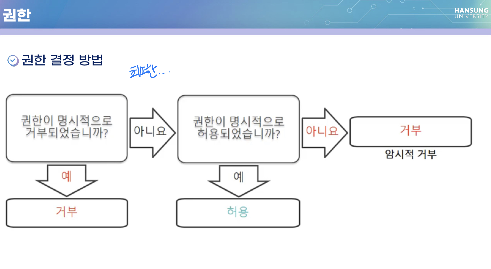

3주차
AWS Introduction
AWS Global Infra
- AWS Region(리전)
- 지리적 영역
- 리전 간의 데이터 복제는 사용자가 제어
- 리전 간 통신: AWS 백본 네트워크 인프라
- 각 AWS 리전은 완전한 이중화 및 네트워크 연결 제공
- 2개 이상의 가용 영역으로 구성됨
- 지리적 영역
- 가용 영역(Availability Zone)
- 각 리전에는 다수의 가용영역이 있음 (region > az > 데이터센터)
- 각 AZ은 AWS 인프라의 완전히 격리된 파티션
- 가용 영역은 별개의 데이터 센터로 구성
- 고속 프라이빅 네트워크를 통해 다른 가용 영역과 상호 연결
- PoP (Point of Presence)
- Amazon CloudFront와 함께 사용됨
- 짧은 지연 시간으로 전송하는 CDN
AWS 서비스 소개
..
AWS Computing Services
Amazon Elastic Compute Cloud(EC2)
- 클라우드에서 EC2 instance라는 가상 머신 제공
- 전세계 어디서나 가용 영역에서 모든 크기의 인스턴스 시작
- 크기 조정 가능한 컴퓨팅 용량
- EC2는 on-premise 서버로 해결하기 어려운 문제를 해결할 수 있음
Amazon Elastic Container Service (ECS) → 실습 x, 설명만
Serverless Computing
: 서버를 관리하지 않고 애플리케이션과 서비스를 구축하고 실행하는 것
- AWS Lambda
- 완전 관리형 컴퓨팅 서비스
- 상태 비저장 코드 실행
- 일정에 따라 또는 이벤트에 대한 응답으로 코드 실행
AWS Service - IAM
AWS Identity and Access Management(IAM)
IAM 그룹
IAM 정책
: 권한을 정의하는 문서
- 자격 증명 기반
- 정책을 모든 IAM 엔터티에 연결 : IAM 사용자, IAM 그룹, IAM 역할
- 정책은 다음을 지정
- 엔터티가 수행할 수 있는 작업
- 엔터티가 수행할 수 없는 작업
- 단일 정책을 여러 엔터티에 연결할 수 있음
- 단일 엔터티에 여러 정책을 연결할 수 있음
- 리소스 기반
- 리소스(ex: S3 bucket)에 연결됨
- 리소스에 액세스할 수 있는 사용자와 해당 사용자가 수행할 수 있는 작업 지정
- 일부 AWS 서비스에서만 지원
IAM 권한
- IAM 정책을 생성하여 권한 할당
- 권한은 허용되는 리소스와 작업을 결정
- 기본적으로 모든 권한은 암시적으로 거부됨
- 명시적으로 거부된 항목은 절대 허용되지 않음
- 모범 사례 : 최소 권한의 원칙 따르기

IAM 역할
- 시나리오
- EC2 인스턴스에서 실행되는 애플리케이션에 S3 버킷에 대한 액세스 권한이 필요한 경우
- 솔루션
- S3 버킷에 대한 액세스 권한을 부여하는 IAM 정책 정의
- 정책을 역할에 연결
- EC2 인스턴스가 이 역할을 수임하는 것을 허용
Root 사용자 vs IAM 사용자
- 모범 사례
- 필요한 경우를 제외하고 루트 사용자를 사용하지 않음
- 루트 사용자
- 루트 사용자 암호 변경
- AWS support plan 변경
- IAM 사용자 권한 복원
- 계정 설정 변경 등등